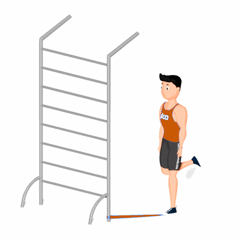

Estabilidade de Arco Plantar com Agachamento Unilateral

O exercício irá fortalecer e trabalhar a estabilidade do arco plantar. Seu principal benefício é a melhora da postura, como também ajuda na execução de atividades físicas como a corrida.
Ficha Técnica
Tipo: Estabilidade
Grupo Muscular: Perna
Aparelho: Nenhum
Músculos: Nenhum
Como realizar
- Prenda uma faixa elástica ao redor de um objeto robusto perto do chão;
- Estique o elástico e coloque um dos pés na ponta do elástico;
- Flexione o joelho da outra perna para atrás, ficando apoiado ao chão somente com uma perna;
- Com a coluna reta e abdome contraído, desça o corpo flexionando o joelho;
- Com a força da coxa, empurre o corpo para cima retornando à posição inicial;
- Após terminar as repetições, inverta a posição das pernas e repita os movimentos.
 RC STORE
RC STORE